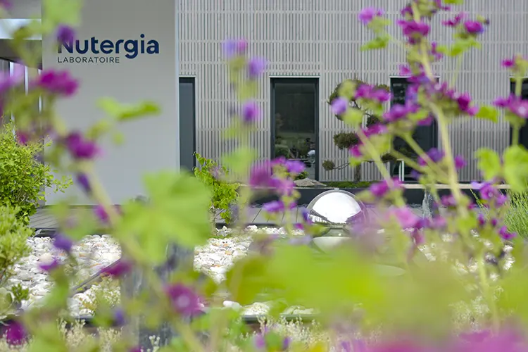

Juillet 2018 :
les équipes lancent les premières productions sur le site éco-industriel tout neuf de Causse-et-Diège. Nouveaux repères, il faut s’approprier ce changement d’échelle et prendre ses marques.
ll y a 5 ans tout juste...
Même si l’on peut encore entendre le son des cloches des troupeaux alentours, ce nouveau laboratoire intégré au paysage du Causse rempli sa promesse de soutenir la croissance de clients en quête de qualité et d’efficacité dans le domaine de la santé naturelle.
2014-2015 :
le laboratoire Nutergia poursuit une croissance à 2 chiffres et jouit d’une notoriété en développement constant. La démarche commerciale s’est structurée. L’officine est à présent le partenaire et l’interlocuteur majeur ; discours marketing, lancement en pré-ventes, conditions commerciales soignées…
Le service formation s’est également étoffé et participe, par une offre abondante et des formats variés, à faire connaître la spécificité de la Nutrition cellulaire active en stimulant la prescription.
La courbe de croissance continuellement ascendante oblige l’entreprise à faire appel à de la sous-traitance sur la fabrication et à entreposer ses matières premières et produits finis dans des zones de stockage hors les murs.
Les ateliers de Capdenac-Gare sont à saturation… Une nouvelle unité de production, reflétant l’image et les valeurs environnementales portées par l’entreprise est une nécessité.
Ancrage en terre d’Aveyron
Soutenue par la sous-préfecture de Villefranche de Rouergue et des élus locaux, le laboratoire lance, avec l’appui du CAUE 12 (Conseil d’architecture et d’urbanisme), un concours d’architectes sur la région Midi Pyrénées. Le lauréat, un cabinet de Montbazens, remporte la maîtrise d’œuvre avec un cahier des charges qui pourrait se résumer ainsi : faire co-exister éthique environnementale et besoins industriels.

Aujourd’hui,
le site bourdonne de projets et de réunions. Les bureaux ont été réaménagés pour redessiner l’espace et accueillir les nouveaux talents.
Il reçoit également au fil des mois clients, partenaires export, visites de tourisme industriel, étudiants …
Inscrit dans le paysage physique et emblématique d’un territoire en mouvement, il symbolise le succès de la famille Lagarde et des équipes qui collaborent aux missions de l’entreprise.
Témoignages

« Bolo »
Antoine Lagarde , Directeur général
« Depuis mon arrivée début 2021, je constate toujours les mêmes regards et réactions d’émerveillement (ou étonnement ? ) des nouveaux visiteurs. Mais au-delà de l’esthétique, ce sont surtout le positionnement environnemental, la qualité de nos produits et nos capacités industrielles qui permettent à notre Labo de se démarquer.
Après ces cinq premières années de mise en place et de montée en puissance, je suis fier d’entamer avec les équipes un nouveau cycle d’optimisation et de structuration à travers entre autres la digitalisation, un nouveau bâtiment semi-finis et la poursuite de nos améliorations carbone.
Dans un monde et un secteur évoluant toujours plus vite, nous serons ainsi plus réactifs et répondront mieux aux demandes particulières de nos clients locaux et étrangers.
Pour les prochaines années, la notion de Labo Eco Industriel doit être encore plus forte et je suis convaincu que l’Humain est le solide socle de cette ambition.
Rendez-vous vite dans cinq ans pour fêter la première dizaine ! »
Guillaume Bize, Directeur Labo Eco-Industriel
« Quel challenge de concevoir une unité neuve de production tout en modernisant les méthodes et procédés de fabrication!
De la réflexion à la mise des idées sur papier et à la formalisation par les architectes et ingénieurs, le chemin jusqu’à la première pierre et la mise en route en prévision d’un démarrage d’activité en 2018 ont été longs.
La montée en puissance des cadences, des compétences du personnel, la gestion des aléas pour arriver là où nous en sommes aujourd’hui a nécessité cinq années de travail et une unité qui est le reflet d’une volonté commune alliant écologie, naturel et nutrition.
Le challenge se poursuit à travers le lancement de nouveaux produits, de nouvelles méthodes de travail et technologies auxquelles il faut s’adapter.
L’avenir nous attend ! »
Pascal Boyer, Directeur pharma
« Une démarche environnementale aussi audacieuse méritait d’être soulignée et valorisée au travers de visites guidées qui témoignent de l’intérêt croissant du grand public envers les entreprises engagées.
Portée par la direction sur ce projet de mise en valeur du site mais surtout d’une histoire, d’un concept et des Humains qui y travaillent, je vois grandir la curiosité, l’étonnement et la satisfaction des publics qui y sont reçus.
Ce projet est en totale adéquation avec les valeurs portées par Nutergia. »
Delphine Galinon, Coordinatrice pôle évènementiel

« J’ai rejoint Nutergia afin de participer à l’installation des activités de Production sur le nouveau site de Causse Et Diège. Je me suis senti un peu privilégié de pouvoir découvrir le site en avant-première et complètement vide ! Nous l’avons vu se remplir assez rapidement avec toutes les machines puis avec les collaborateurs. Après avoir réalisé de nombreux tests avec notamment le service de Maintenance et d’autres prestataires, nous avons pu ensuite accompagner le personnel de Production pour prendre en mains leur nouvel outil de travail. Aujourd’hui encore une des missions du service Méthodes et Process est d’assurer un support technique à la Production. »
Julian Tronc, Responsable méthodes & process
« J’ai intégré Nutergia en Janvier 2003 à Capdenac Gare dans une équipe de 5 personnes avec une bonne ambiance. Nous avons ensuite déménagé dans un local en attendant que Causse et Diege soit prêt.
Et le grand jour est arrivé ! Un espace de travail beaucoup plus grand, très éclairé, une vue sur la nature magnifique, un lieu très agréable, avec des postes de travail améliorés et adaptés.
Nous sommes toujours une bonne équipe, avec une bonne ambiance et un véritable esprit d’équipe.
Je suis heureuse de travailler chez Nutergia et cela fait maintenant 20 ans. »
Mireille Surace, Agent d'expédition

« J’ai rejoint l’entreprise en 2020 au sein du service production plus particulièrement au conditionnement liquide. Arrivant dans un contexte de forte croissance due aux années COVID, j’ai intégré un atelier dynamique et qui ne cesse de croitre. Malgré ces nombreux challenges j’ai été magnifiquement accueilli par de formidables collègues. En ce début d’année j’ai décidé de m’impliquer davantage en rejoignant le CSE et apporter ma modeste contribution à l’évolution du laboratoire et d’exprimer au mieux les attentes des camarades. »
Florian Izoulet, Agent de production
Plus de photos ? Faites les défiler avec les flèches